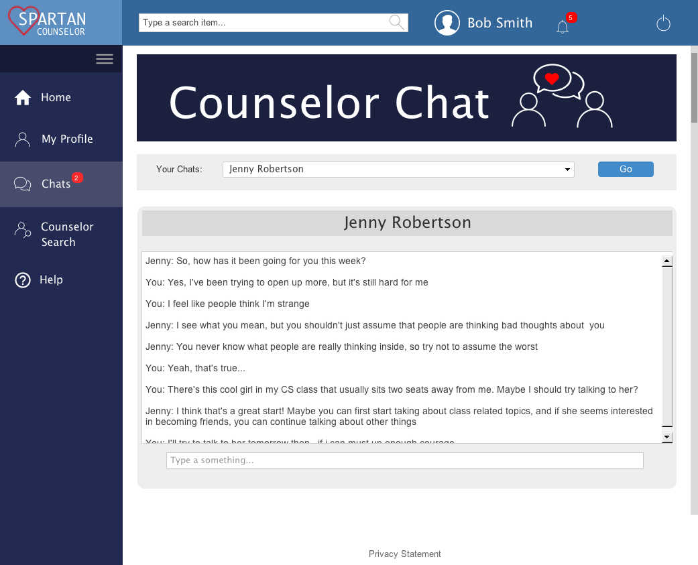
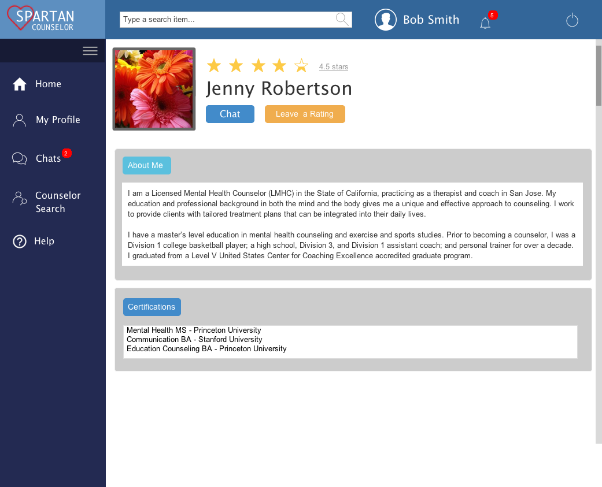

Spartan Counselor
Created by Stephanie Cheng, Malik Ata, Tsering Dolkar, and Rahfia Choudhury
Spartan Counselor is a web application that allows San José State students to easily and conveniently connect with counselors and peers online. Since there are currently no platforms available to connect with counselors aside from SJSU's automatic appointment service, students often do not reach out for help because the process of booking and going to a counseling appointment requires too much time and effort. For instance, some obstacles include: limited appointment availability, counselor office hour restrictions, and discomfort meeting counselors in person. Our application provides a solution to this problem by providing a convenient online service where students can receive support for their mental well being and have someone to talk to about their worries and personal issues. This website was implemented using a three-tier architecture with the Apache Tomcat web server, JSP pages, and MySQL database. This site features functions such as user authentication, user profiles, counselor search, forum posting, and direct messaging. This project has been an enjoyable experience that allowed me to strengthen my critical thinking skills, creativity skills, and web development skills.
 